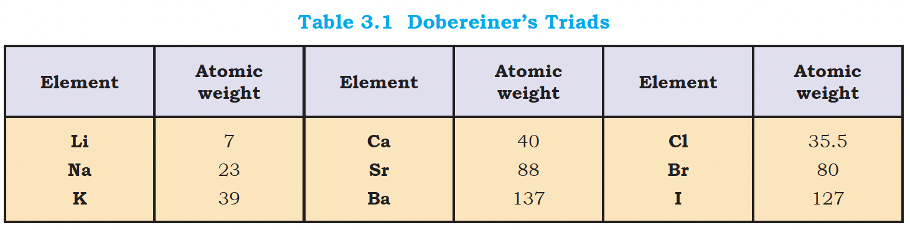
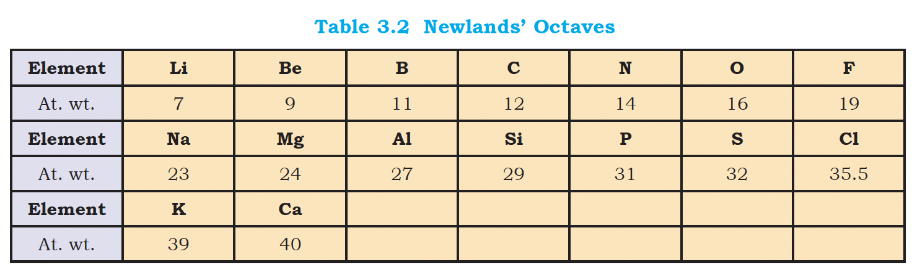
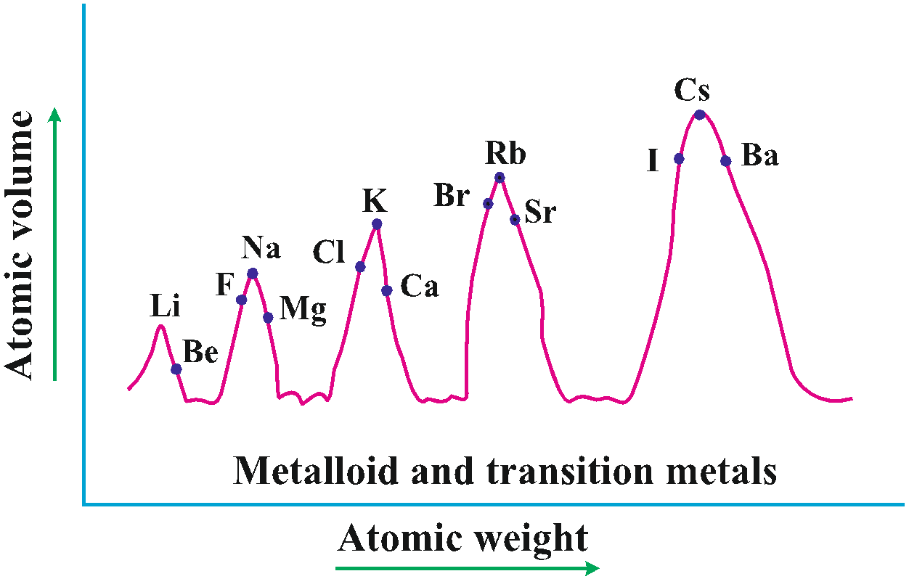

The German chemist, Johann Dobereiner in 1829 he noted a
similarity among the physical and chemical properties of several
groups of three elements (Triads). In each case, he noticed that
the middle element of each of the Triads had an atomic weight
about half way between the atomic weights of the other two.

Also the properties of the middle element were in between those of
the other two members.
The model failed as all the known elements could not be fixed in
Triads. Also, in the same group too, law was not always obeyed.
John Alexander Newlands in 1865 profounded the Law of Octaves. He
arranged the elements in increasing order of their atomic weights
and noted that every eighth element had properties similar to the
first element.

Newlands’s Law of Octaves seemed to be true only for elements up
to calcium. Also, with discovery of noble gases, "octave" was no
longer valid. Also, it began to fail with the discovery of heavier
elements.
MENDELEEV'S LAWS
The Periodic Law, as we know it today owes its development to the
Russian chemist, Dmitri Mendeleev (1834-1907) and the German
chemist, Lothar Meyer (1830-1895).
Lothar Meyer used a graph, while Mendeleev used a periodic table.
Lothar Meyer plotted atomic volume (y-axis) vs atomic weight
(x-axis). Elements at the similar position (example at peaks) on
the curve had similar physical and chemical properties.

Mendeleev is also known as the "father of the periodic table of
the chemical elements"
Mendeleev's Periodic law: The properties of the elements are a
periodic function of their atomic weights
Mendeleev's famous Periodic Table was published in 1905
He wrote a book called "Principles of Chemistry"
The 101st elements is named after him -> "Mendelevium"
At the time. he proposed periodic table of elements, the structure
of atom was unknown. Even noble gases were not known.
Merits of Mendeleev's periodic table:
All 63 elements were arranged
He proposed that "Periodic property is proportional to Atomic
Weight"
He left gaps for undiscovered elements.
He even predicted properties of undiscovered elements.
He left the gap under aluminium and a gap under silicon, and
called these elements "Eka-Aluminium" and "Eka-Silicon".
Mendeleev predicted not only the existence of gallium and
germanium, but also described some of their general physical
properties. These elements were discovered later.
Demerits of Mendeleev's periodic table:
He began grouping dissimilar elements -> Na,K,Rb were placed
with Ca and Ag
Separated similar elements like Pt and Au
He clubbed Isotopes whereas according to his rule, they have
increasing atomic weights, and so should have been separate.
THE MODERN PERIODIC LAW
In 1913, the English physicist, Henry Moseley observed
regularities in the characteristic X-ray spectra of the elements.
A plot of \( \sqrt{\nu} \) (where \( \nu \) is frequency of X-rays
emitted) against atomic number (\( Z \)) gave a straight line and
not the plot of \( \sqrt{\nu} \) vs atomic mass.
He thereby showed that the atomic number is a more fundamental
property of an element than its atomic mass.
Mendeleev's Periodic Law was, therefore, accordingly modified.
This is known as the Modern Periodic Law and can
be stated as : The physical and chemical properties of the
elements are periodic functions of their atomic numbers
Periodicity is the repitition of properties after a fixed interval
of elements. It is also the gradual increase in the properties for
each successive element.
The atomic number is equal to the nuclear charge (i.e., number of
protons) or the number of electrons in a neutral atom.
The Periodic Law is essentially the consequence of the periodic
variation in electronic configurations, which determine the
physical and chemical properties of elements and their compounds.